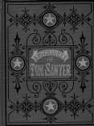
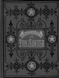
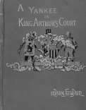
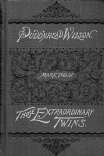
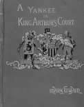
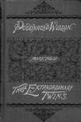
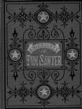
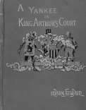
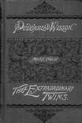

Elmira, New York
1868-1910
"It is a cozy nest, with just room in it for a sofa and a table and three or four chairs--and when the storms sweep down the remote
valley and the lightening flashes above the hills beyond, and the rain beats on the roof over my head, imagine the luxury of it!"
Samuel Clemens, letter to Joseph Twichell, June 11, 1874
Langdon Family Home
1868-1870
picture courtesy of Mark Twain
"I just don't wonder that it makes you sad to think of leaving such a home, Livy, & such household Gods--
for there is no other home in all the world like it--no household gods as lovable as yours, anywhere. And I
shall feel like a heartless highway robber when I take you away from there...we'll model our home after the
old home, & make the spirit of Love lord over all the realm." letter to Olivia L. Langdon, 12.23.1868, Lansing,
MI, as quoted in Mark Twain's Letters, Vol. 2

"Quarry Farm"
1871-1910
Main House Gazebo Study

pictures courtesy of Mark Twain in Elmira and Papa
"It is the
lovliest study you ever saw. It is octagonal, with a peaked roof, each
octagon filled with a spacious
window, & it sits perched in complete isolation on top of an elevation that commands leages of valley & city
& retreating ranges of distant blue hills." letter to Joseph Twitchell, 6.11.1874, Elmira, NY, as quoted in Mark
Twain's Letters, Vol. 6
 
 
 



Back to Washington | On to Buffalo


window, & it sits perched in complete isolation on top of an elevation that commands leages of valley & city
& retreating ranges of distant blue hills." letter to Joseph Twitchell, 6.11.1874, Elmira, NY, as quoted in Mark
Twain's Letters, Vol. 6


Back to Washington | On to Buffalo